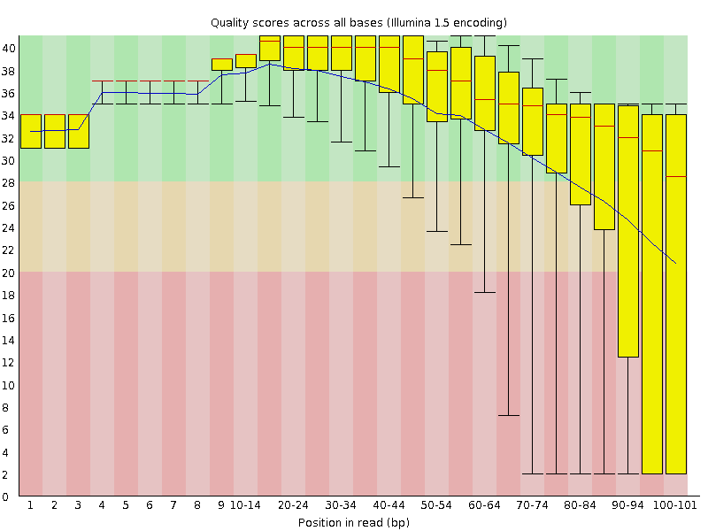
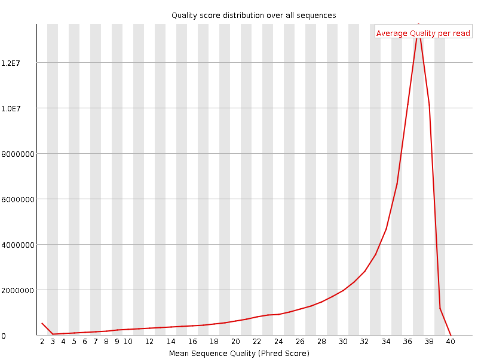
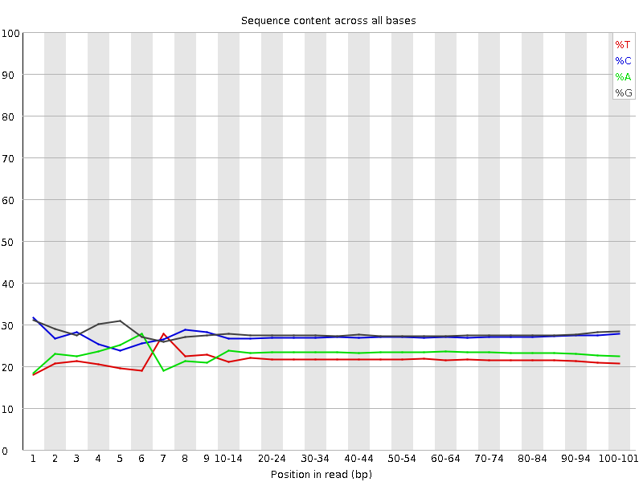
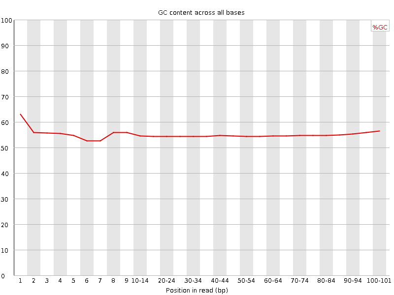
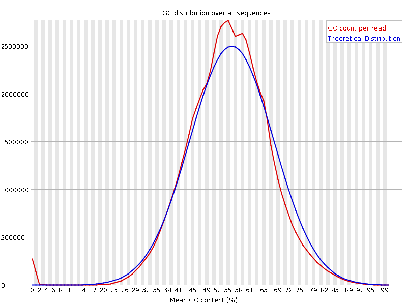
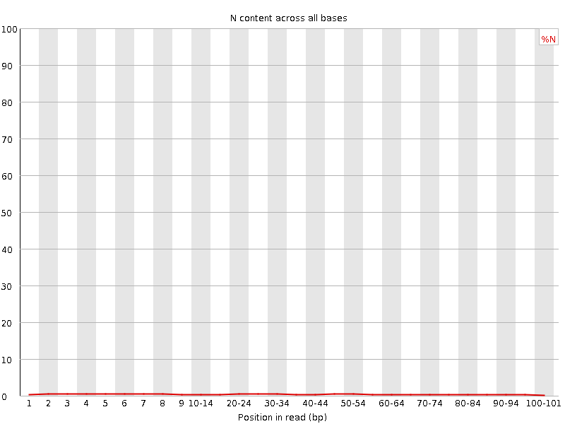
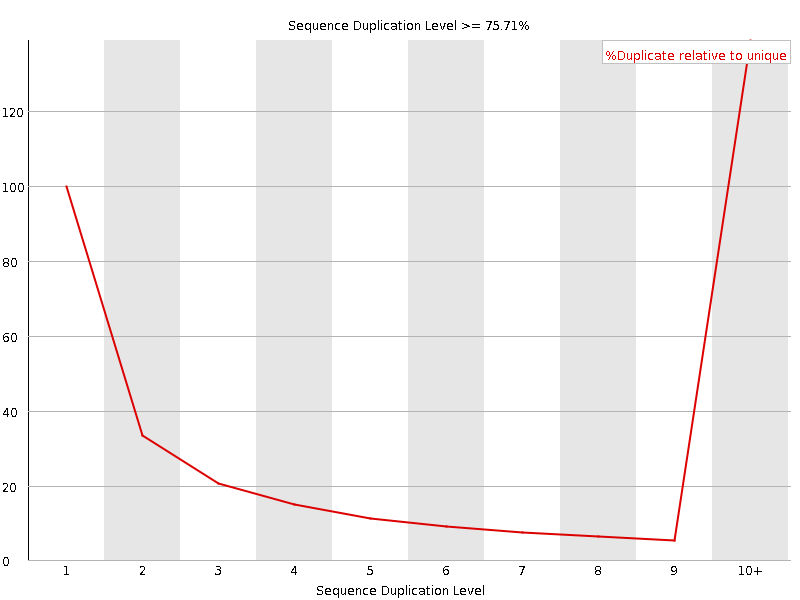
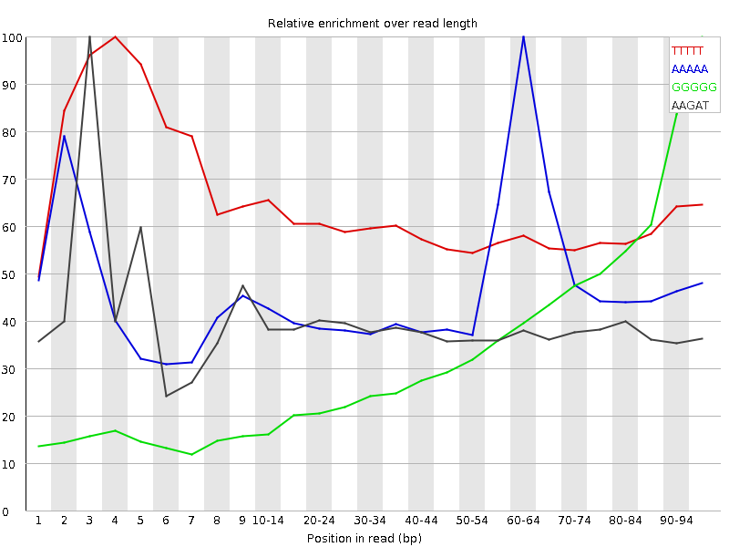

![[OK]](Icons/tick.png) Basic Statistics
Basic Statistics
| Measure | Value |
|---|---|
| Filename | SRR534302_2.fastq |
| File type | Conventional base calls |
| Encoding | Illumina 1.5 |
| Total Sequences | 73685727 |
| Filtered Sequences | 0 |
| Sequence length | 101 |
| %GC | 54 |
![[FAIL]](Icons/error.png) Per base sequence quality
Per base sequence quality

Per sequence quality scores

![[WARN]](Icons/warning.png) Per base sequence content
Per base sequence content

Per base GC content

Per sequence GC content

Per base N content

Sequence Length Distribution

Sequence Duplication Levels

Overrepresented sequences
| Sequence | Count | Percentage | Possible Source |
|---|---|---|---|
| NNNNNNNNNNNNNNNNNNNNNNNNNNNNNNNNNNNNNNNNNNNNNNNNNN | 330253 | 0.4481912759034053 | No Hit |
| GATCGGAAGAGCGTCGTGTAGGGAAAGAGTGTAGATCTCGGTGGTCGCCG | 123702 | 0.1678778306686178 | Illumina Single End PCR Primer 1 (100% over 50bp) |
| GTCTTCTGACAGCTGGTGCGCCTGCCCGGGAACATCCTCCTGGACTCAAT | 90034 | 0.12218648531485615 | No Hit |
Kmer Content

| Sequence | Count | Obs/Exp Overall | Obs/Exp Max | Max Obs/Exp Position |
|---|---|---|---|---|
| TTTTT | 10989200 | 3.2206185 | 5.3129725 | 4 |
| AAAAA | 13025205 | 2.6350043 | 5.5604196 | 60-64 |
| GGGGG | 22955805 | 1.9670906 | 5.3015733 | 95-97 |
| AAGAT | 10533610 | 1.9326639 | 5.0284934 | 3 |